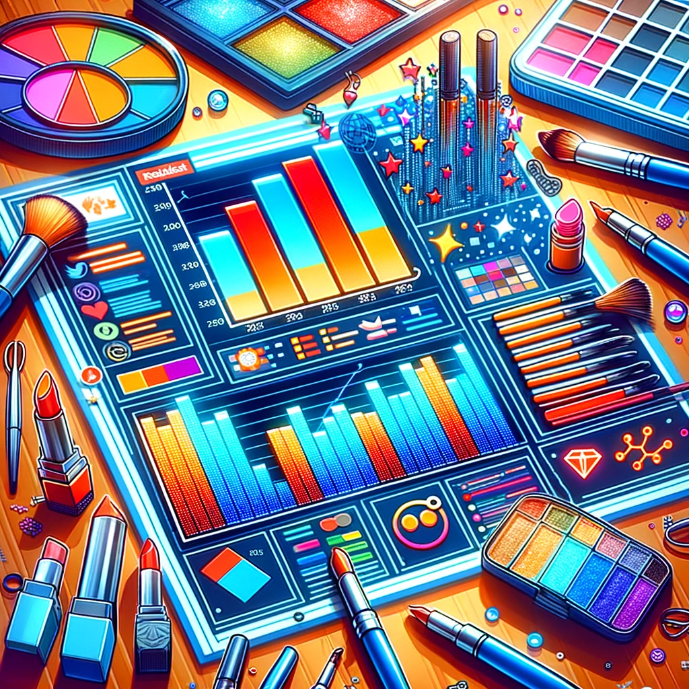

In our groundbreaking study of the "MakeupAddiction" subreddit spanning from 2021 to 2023, we unveiled the evolving language and sentiments within the beauty community. Our non-technical analysis focused on understanding how the community interacts with key influencers and hot topics, the sentiments towards top beauty brands, and the shifting beauty-related terminology over time.
In essence, our project provides key insights into the emotional and linguistic dynamics of the beauty community on Reddit. These findings are instrumental for influencers, brands, and enthusiasts in understanding and engaging with this vibrant online community.
Basic Data Text Analysis
Most Common Words Analysis
Top words in submissions: 'deleted', 'removed', 'makeup', 'like', 'ive'.
Top words in comments: 'please', 'search', 'post', 'look', 'thank'.
The frequent appearance of 'deleted' and 'removed' could indicate a strict moderation policy in the subreddit or a high level of self-moderation (users deleting their own posts). It might also suggest discussions about the removal of posts or comments. Words like 'makeup', 'skin', 'foundation' are expected in a makeup-related subreddit. Their high frequency shows a strong focus on product discussions and advice. Other frequent words like 'like', 'look', 'use', 'really', and 'good' are likely part of conversations about product recommendations, reviews, or sharing makeup looks. Top Words by Year Submissions Filtered (top_words_by_year_submissions_filtered_pd):
The consistency of certain words ('deleted', 'removed', 'makeup', 'skin', 'foundation') across different years suggests that the nature of discussions in the subreddit remains stable over time. The persistence of moderation-related words over the years could also imply ongoing concerns or discussions about content policies, user behavior, or community guidelines within the subreddit. Top Words by Month Submissions Filtered (top_words_by_month_submissions_filtered_pd):
This table offers insight into any seasonal trends or monthly variations in discussions. For instance, certain makeup products or techniques might become more popular in specific months. The presence of words like 'foundation', 'skin', 'eye', 'face', 'mascara' across different months indicates a consistent interest in various aspects of makeup application and products. Overall Analysis:
Community Dynamics: The frequent appearance of 'deleted' and 'removed' in all tables highlights the importance of community moderation in shaping discussions. This could be a point of interest for understanding user behavior and community management in online forums. Focus on Products and Techniques: The consistent mention of specific makeup items and terms such as 'makeup', 'foundation', and others suggests that product recommendations, reviews, and makeup application techniques are central to the subreddit's content. This shows a community actively engaged in sharing and seeking advice on makeup products and practices. Temporal Trends: While some words are consistent throughout the year, looking deeper into the monthly data might reveal seasonal trends in makeup interests (like certain products being more popular in summer or winter). This can be valuable for marketing strategies or understanding consumer behavior in the beauty industry.
Words like 'please', 'search', 'post', and 'look' are very frequent. 'Please' and 'search' could indicate a community that values politeness and encourages searching for information before posting. 'Mua' (makeup artist) is common, reflecting the subreddit's focus on professional makeup artistry. 'Sidebar' and 'rules' suggest that users frequently refer to or remind others about the subreddit's guidelines. Words like 'makeup', 'shade', 'product' show a clear focus on makeup products and their specifics. Top Words by Year in Comments Filtered (top_words_by_year_comments_filtered_pd):
The consistent appearance of words over the years 'please', 'search', 'look', 'thank' indicates a stable culture in the subreddit, with emphasis on politeness and information-seeking. The presence of 'sidebar', 'rules', 'posting' across years suggests ongoing guidance or reminders about community norms and rules. Makeup-related words 'makeup', 'shade', 'product' remain prominent, underscoring the subreddit's focus on makeup discussion. Top Words by Month in Comments Filtered (top_words_by_month_comments_filtered_pd):
Monthly data shows similar patterns to the yearly data, with 'please', 'search', 'post', and 'look' consistently ranking high. This indicates a steady community culture throughout the year. Seasonal trends in makeup discussions might be inferred by changes in the frequency of certain makeup-related words 'shade', 'product', 'makeup'. Overall Analysis:
Community Culture: The consistent use of words like 'please', 'thank', and 'search' suggests a community that values politeness, helpfulness, and self-reliance in finding information. This could be indicative of a positive and supportive online environment. Guidance and Moderation: Frequent references to 'sidebar', 'rules', and 'posting' indicate an active moderation presence and a community that self-regulates by reminding each other of guidelines. Focus on Makeup Artistry and Products: The regular appearance of words like 'mua', 'makeup', 'shade', and 'product' aligns with the subreddit's theme, showing an engaged user base discussing various aspects of makeup.
TF-IDF Analysis
First Submission:
Top Word: 'deleted' with a score of 0.8975.
Analysis: This might indicate that the first submission was deleted or the text content was removed before analysis. The presence of the word 'deleted' suggests that the post might have been redacted or edited after initial posting.
Second Submission:
Top Words: 'eye' (score: 7.7804), 'needed' (6.7856), 'low' (6.1390), 'rare' (6.0054), 'prep' (5.9646), 'eyelids' (5.8513), 'wasnt' (5.7823), 'general' (5.7177), 'fenty' (5.0891), 'nars' (4.9494).
Analysis: The words like 'eye', 'eyelids', 'fenty', and 'nars' suggest a focus on eye makeup and possibly specific brands (Fenty and Nars). Words such as 'needed', 'low', and 'rare' might indicate a discussion about the necessity or rarity of certain products or techniques, possibly in the context of eye makeup. 'prep' could refer to makeup preparation techniques. This submission seems to be rich in content about eye makeup preferences, techniques, or product recommendations.
Third Submission:
Top Word: 'removed' with a score of 1.5530.
Analysis: Similar to the first submission, this might indicate a post that was edited or had its content removed. The word 'removed' can be associated with posts that have undergone modifications or deletions.
Overall Insights: The dominant presence of words related to eye makeup in the second submission suggests that this is a key topic of interest or discussion in the subreddit. The frequent mention of specific brands ('fenty', 'nars') could indicate brand preferences or discussions about these brands' products. The presence of words like 'deleted' and 'removed' in other submissions suggests that some posts might be moderated, edited, or removed post-publishing, which is common in online communities for various reasons.
First Comment:
'brother' (7.64): High relevance, possibly discussing a personal experience or story involving a brother. 'sheer' (5.75): Could refer to a type of makeup finish, indicating a discussion about product characteristics. 'onto' (5.60): A connecting word, its high score might indicate unique usage in the context. 'ones' (4.78): Likely referring to specific products or types of makeup. 'get' (2.91): General usage, but its context in the comment could be unique.
Second Comment:
'mentioned' (6.05): Indicates reference to something previously discussed, possibly a product or technique. 'nose' (4.57): Likely discussing makeup application related to the nose, such as contouring. 'concealer' (3.60): Direct reference to a makeup product, possibly discussing its use or properties.
Third Comment:
'lipsticks' (5.63): Direct reference to a category of makeup product. 'ones' (4.78): As before, likely refers to specific types of products or brands. 'cool' (4.12): Could be describing a color palette or general appeal of a product. 'looks' (2.34): Might refer to makeup looks or styles.
Interpretation and Insights: The words with the highest TF-IDF scores are likely key topics or themes within each comment. These words are more unique to the comment in the context of your entire dataset. Words like "brother", "sheer", "nose", "concealer", and "lipsticks" suggest a focus on personal experiences, product characteristics, and specific makeup items. The context in which these words are used (e.g., discussing a product, sharing a personal story, giving advice) would provide more depth to the analysis. However, this requires examining the full text of the comments. The presence of more general words like "get" and "ones" with high scores may indicate a unique usage pattern in these specific comments, which sets them apart from the rest of the dataset.
Analysis Report
1. Evaluating Influencers’ Emotional Impact with Additional Data Insights
- 1. Project Overview and Data Preparation with Karma Analysis
- 2. Sentiment Analysis Pipeline Enhanced with Karma Consideration
- 3. Revised Business Goals with External Data Integration
- 4. Results and Visualization Incorporating Karma Data
- X-Axis (Creator Score): Reflects the influencers' popularity and engagement frequency in the subreddit.
- Y-Axis (Posting Karma): Demonstrates the community's appreciation for the influencers' contributions, as manifested in their posting karma.
- Color Code (Created Year): Distinguishes the data points based on the creation year of the influencers' posts, offering insights into the temporal trends of influence and community engagement.
- 5. Conclusion with Insights from Karma and Sentiment Interplay
The project "Evaluating Influencers’ Emotional Impact" expanded to include the dimension of 'posting_karma' to measure the value of influencers' contributions to the "MakeupAddiction" subreddit. Our methodology combined PySpark and Spark NLP for data sourcing and preparation, ensuring that our sentiment analysis was grounded on a dataset enriched with additional metrics like karma scores.
Our dataset was augmented with external data from the Python Reddit API Wrapper, adding a new variable 'posting_karma'. This allowed us to assess not only the sentiment of the influencers' interactions but also the community's valuation of their contributions.
Our sophisticated sentiment analysis model was enriched with an understanding of the influencers' karma scores. This helped us contextualize the emotional tones of responses within the broader scope of the influencers' reputation and authority as reflected by their karma.
Following the exploratory task of identifying the top 10 creators, we move on to assess the sentiment of top creators' comments to gauge the overall emotional tone of their response. This will provide further and more scientific insights into the influencer-audience interactions in MakeupAddiction.
Integrating 'posting_karma' data revealed a correlation between influencers' engagement levels and their recognized value in the community. We visualized this relationship, showing a moderate correlation coefficient of 0.46 between posting karma and creator scores, suggesting that influencers who contribute valuable content also tend to engage positively with their audience.
Key Points from the Visualization:
Predominance of Positive Sentiments: Positive sentiments dominate, with 78% of the total, signifying a supportive engagement by influencers.
Minority of Negative Sentiments: Negative sentiments are less frequent but notable, representing 11.3% of the total.
Impact of Posting Karma: Influencers with higher 'posting_karma' tend to exhibit more positive sentiments, possibly indicating that more valued contributors are also more positive in their interactions.
Visualization of Karma and Sentiment Relationship:
We presented a scatter plot to depict the relationship between 'posting_karma' and sentiment analysis results. Our visualization demonstrates that influencers with higher karma scores, indicating valuable contributions, also tend to engage more positively with the community.
Integrating 'posting_karma' data, we observed the relationship between influencers' engagement levels and the community's valuation of their contributions. Our analysis revealed a positive correlation coefficient of 0.46 between posting karma and creator scores. This correlation suggests that influencers who are valued for their content contributions also tend to foster positive engagements within the community.
Visualization Interpretation:
The interactive scatter plot, titled 'Relationship between Creator Score and Posting Karma (2021-2023)', is an essential part of our visualization effort. It elucidates:
This plot serves not just as a reflection of past interactions but also as a directional compass for future engagement strategies. By understanding the association between karma and creator scores, influencers can strategize to enhance their community presence and contribution value.
Our project has unveiled the multifaceted role of influencers in shaping online communities. The positive correlation between 'posting_karma' and sentiment underlines the dual importance of valuable content creation and positive community engagement. Our findings underscore the significance of influencers' contributions, both in terms of content and interaction, in fostering a vibrant and supportive subreddit ecosystem.
2. Unlocking Positivity in Hot Topics:
- 1. Project Overview and Data Preparation:
- Our project aimed to uncover the sentiment and community reception of content within the top 30 tags in the MakeupAddiction subreddit.
- We started by setting up a PySpark session, ensuring the necessary NLP libraries like Spark NLP and NLTK were in place.
- Data was sourced from the subreddit, focusing on posts tagged within our scope. This dataset was then sampled, reducing its size to a manageable level while retaining statistical significance.
- 2. Data Preprocessing and Analysis:
- The preprocessing phase involved employing Document Assembler and Normalizer from Spark NLP to standardize and clean the text data.
- We identified the top 30 tags based on the volume of comments, allowing us to concentrate our analysis on the most engaging topics within the subreddit.
- A pivot in our initial strategy occurred here: instead of the top 100 tags, we refocused on the top 30, as they represented the core areas of community interest.
- 3. Sentiment Analysis Implementation:
- Employing TextBlob, we performed sentiment analysis on both the titles and bodies of the submissions.
- We categorized sentiments into Positive, Neutral, and Negative based on their polarity scores, which gave us a clear picture of the emotional tone associated with each tag.
- This sentiment categorization was pivotal in understanding the community's reception and interaction with various topics.
- 4. Visual Representation and Insights:
- 5. Findings and Implications:
- Makeup Products Analysis Summary:
- 2021: The popularity of a diverse range of products (mascara, foundation, lipstick, concealer) suggests a broad interest across different makeup categories.
- 2022: Foundation's rise to the top spot may indicate a shift towards face makeup, providing a direction for product development and marketing strategies.
- 2023: The enduring popularity of mascara and the emerging prominence of primer point to sustained interest in eye makeup and preparation products.
- Product Development: Leverage insights to focus on consistently in-demand products like foundation, mascara, and lipstick.
- Marketing Campaigns: Create targeted campaigns, especially during peak periods identified in the trend analysis.
- Trend Adaptability: Stay flexible to accommodate changing makeup trends, ensuring that business strategies align with consumer preferences.
- Market Expansion: Consider expanding product lines in areas like face makeup and eye preparation, responding to observed market trends.
- Google Trends Analysis:
- Makeup Products Brand Analysis Summary:
- Established and widely recognized brands such as MAC, Sephora, and NARS consistently rank among the top mentioned makeup brands across all three years.
- These brands have a strong and enduring presence in user discussions.
- The makeup landscape is dynamic, with varying brand mentions from year to year.
- Newer or trendier brands may emerge, and businesses should stay attuned to these changes for strategic planning.
- Top Brand: MAC
- Key Brands: Sephora, NARS, Urban Decay
- Observations: MAC takes the lead, indicating its popularity among users. Other notable brands include Sephora and NARS.
- Top Brand: MAC
- Key Brands: Sephora, NARS, Urban Decay, Estee Lauder
- Observations: MAC maintains its top position, and Estee Lauder emerges among the key brands, suggesting a potential marketing push or product innovation.
- Top Brand: MAC
- Key Brands: Sephora, NARS, Urban Decay, Estee Lauder
- Observations: Similar to 2022, MAC continues to dominate, with consistent key brands indicating sustained interest.
- Brand Partnerships: Businesses may explore partnerships or collaborations with popular brands like MAC to leverage their established market presence.
- Monitoring Emerging Brands: Keep a close eye on emerging brands that enter the top mentions, as they may represent evolving trends or rising competition.
- Product Placement and Marketing: Allocate marketing resources strategically, focusing on the most mentioned brands each year to maximize visibility and engagement.
- Market Expansion: Identify opportunities for expanding product lines in collaboration with popular brands, aligning with user preferences.
- The analysis assumes accurate data and appropriate preprocessing.
- Further analysis could involve sentiment analysis to understand user sentiments towards specific brands.
- Continuous monitoring of brand mentions is crucial for staying responsive to evolving consumer preferences and market trends.
- Google Trends Analysis:
- Skincare Products Analysis Summary:
- Essence and Cleanser: Essence and cleanser make it to the top mentions in 2021, indicating a focus on essential skincare steps.
- Mask, Moisturizer, and Sunscreen: Masks, moisturizers, and sunscreens are highly mentioned, emphasizing skincare routines that involve hydration and sun protection.
- Business Insight:Products related to hydration and sun protection are popular, suggesting potential market demand.
- Serum, Moisturizer, and Sunscreen Dominate: Serum, moisturizer, and sunscreen take the lead in 2022, reflecting a continued emphasis on hydration and sun protection.
- BHA Mention: BHA (Beta Hydroxy Acid) makes an appearance, suggesting a growing interest in specific skincare ingredients.
- Business Insight:Continuing the focus on hydration and sun protection, businesses may consider promoting BHA-related products.
- Toner and Essence Introduction: Toner and essence emerge in 2023, indicating a potential shift towards additional skincare steps.
- Cleanser, Serum, and Moisturizer: These remain prominent, emphasizing a balanced skincare routine.
- Business Insight:The introduction of toner and essence suggests evolving skincare routines, offering opportunities for product diversification.
- Product Development:
- Develop and promote products aligned with popular skincare categories each year.
- Consider introducing products with specific ingredients, such as BHA, to meet emerging trends.
- Marketing Emphasis:
- Allocate marketing resources to highlight top skincare products.
- Create educational content around the benefits of specific ingredients to cater to informed consumers.
- Market Monitoring:
- Regularly monitor shifts in skincare trends to stay ahead of consumer preferences.
- Adapt product offerings and marketing strategies based on evolving trends.
- Consumer Preferences:
- Identify and capitalize on growing interest in specific skincare steps or ingredients.
- Tailor marketing messages to resonate with consumer preferences reflected in the data.
- Ensure data accuracy and appropriate preprocessing for robust analysis.
- Incorporate sentiment analysis for deeper insights into consumer attitudes towards skincare products.
- Continuous monitoring and adaptation to evolving skincare trends are crucial for business success.
- Google Trends Analysis:
- The Original Plot highlighted essence and cleanser as top mentions, indicating an emphasis on fundamental skincare steps.
- The Google Trends Plot shows a consistent pattern with moisturizer and cleanser maintaining a steady search interest throughout the year, corroborating the importance of these basic skincare products.
- Masks show significant fluctuation in the Google Trends Plot, suggesting variable interest throughout the year, possibly influenced by seasonal trends or specific events.
- Serum, moisturizer, and sunscreen were noted as dominant in the Original Plot, which is partially reflected in the Google Trends Plot where moisturizer maintains high interest, but sunscreen does not appear to have a significant presence.
- The mention of BHA in the Original Plot suggests a growing interest in active skincare ingredients, which is also indicated in the Google Trends Plot by the gradual increase in search interest for BHA over the year.
- The Original Plot describes the introduction of toner and essence, hinting at a potential shift towards more comprehensive skincare routines. The Google Trends Plot shows a marked increase in search interest for toner at the beginning of the year, aligning with this observation.
- Cleanser, serum, and moisturizer remain prominent in both plots, underscoring their continued relevance in skincare routines.
- The Google Trends Plot shows that AHA maintains a lower but consistent interest level, suggesting it remains a niche concern among skincare trends.
- Product Development: Both plots indicate a steady consumer interest in moisturizers, cleansers, and serums, suggesting these should be focus areas for product development. The emerging popularity of ingredients like BHA points to opportunities for incorporating such ingredients into new product formulations.
- Marketing Emphasis: Given the sustained interest in foundational skincare products, marketing resources should continue to highlight these items. Educational content around the benefits of specific ingredients like BHA can cater to a more ingredient-conscious consumer base.
- Market Monitoring: Regular monitoring of skincare trends is validated by the fluctuating interests shown in the Google Trends Plot, which emphasizes the need for businesses to remain agile in their marketing strategies. The increasing interest in toner and the sustained relevance of moisturizer and serum suggest that companies should adapt their offerings to include these products prominently.
- Consumer Preferences: Identifying and capitalizing on growing interests, such as the apparent rise in searches for toner, would allow businesses to align with consumer preferences. Marketing messages should reflect the data-driven insights, particularly focusing on the consistent demand for essential skincare products.
- Ensuring data accuracy and conducting appropriate preprocessing is crucial for robust analysis, as fluctuations in search interest could be influenced by external factors not immediately apparent in the data.
- Sentiment analysis, not visible in the plots, would provide deeper insights into consumer attitudes toward specific skincare products, which is critical for aligning product development and marketing strategies with consumer sentiment.
- Skincare Products Brand Analysis Summary:
- Glossier and Simple Lead: Glossier and Simple emerge as the top skincare brands in 2021, with a notable lead in mentions.
- Cerave, Aveeno, and Clinique: These brands also secure positions in the top mentions, showcasing diversity in consumer preferences.
- Business Insight: The dominance of Glossier and Simple suggests a preference for minimalist and effective skincare, offering potential market niches.
- Fresh and Cerave Dominate: Fresh and Cerave take the lead in 2022, indicating a shift in popular brands.
- Neutrogena, Shiseido, and Others: Established brands like Neutrogena and Shiseido continue to have a presence, showcasing a mix of established and emerging preferences.
- Business Insight: Businesses may consider collaborations or promotions with trending brands like Fresh to align with evolving consumer choices.
- Simple Maintains Top Position: Simple retains its top position in 2023, suggesting continued consumer trust.
- New Entrants: Neogen, Biore, and Fresh make appearances, indicating potential shifts in consumer preferences.
- Business Insight: Opportunities exist for businesses to capitalize on emerging brands like Neogen and Biore through strategic partnerships or targeted marketing.
- Brand Collaboration:
- Identify opportunities for collaboration with top-performing brands, leveraging their popularity for mutual benefit.
- Product Promotion:
- Tailor marketing strategies based on the popularity of specific brands each year, ensuring effective product promotion.
- Diversity in Offerings:
- Consider offering a diverse range of skincare products to cater to the varied preferences reflected in the top brand mentions.
- Market Positioning:
- Stay informed about the emergence of new brands and adjust market positioning to align with evolving consumer choices.
- Consumer Trust:
- Build and maintain consumer trust by consistently delivering quality products, as reflected in brands like Simple maintaining popularity.
- Ensure data accuracy and appropriate preprocessing for robust analysis.
- Incorporate sentiment analysis for deeper insights into consumer attitudes towards skincare brands.
- Continuous monitoring and adaptation to evolving brand preferences are crucial for business success.
- Google Trends Analysis:
- Glossier and Simple emerge as the top skincare brands in the Original Plot for 2021, indicating a focus on minimalist and effective skincare.
- In the Google Trends Plot, Glossier shows a peak in interest, which aligns with the Original Plot's findings. Simple does not appear to be represented in the Google Trends Plot, suggesting a discrepancy between the two data sets.
- Cerave shows a steady and significant presence in the Google Trends Plot, which supports the Original Plot's observation of its strong position.
- The Original Plot notes Fresh and Cerave as leading brands in 2022. The Google Trends Plot reflects this with Cerave maintaining a prominent interest level throughout the year.
- Neutrogena and Shiseido are noted for their continued presence in the Original Plot, which is consistent with the moderate and steady interest shown in the Google Trends Plot.
- According to the Original Plot, Simple maintains the top position in 2023, which is not reflected in the Google Trends Plot where Simple's presence is not evident.
- Neogen and Biore, mentioned as new entrants in the Original Plot, do not appear in the Google Trends Plot, highlighting a potential gap in the captured data or a difference in the timeframe of data collection.
- Brand Collaboration: The presence of Cerave across both plots suggests it is a strong candidate for brand collaborations.
- Product Promotion: Consistency in brand interest across both plots for brands like Cerave and Neutrogena indicates the potential effectiveness of product promotion strategies centered around these brands.
- Diversity in Offerings: The varying interest levels in different brands across the plots suggest that a diverse range of products could cater to consumer preferences effectively.
- Market Positioning: Discrepancies between the plots indicate the need for businesses to have adaptable market positioning strategies.
- Consumer Trust: The sustained popularity of certain brands in both plots emphasizes the importance of building and maintaining consumer trust through consistent quality.
- Data accuracy and appropriate preprocessing are vital to ensure robust analysis, as highlighted by the differences in brand mentions between the two plots.
- Sentiment analysis could complement these findings by providing depth to the understanding of consumer attitudes towards these brands.
- Leverage Positive Engagement: Maintain a positive tone in interactions to build a favorable brand image.
- Track Evolving Trends: Stay abreast of popular discussions to align products with consumer interests.
- Optimize SEO Strategies: Utilize insights from Google Index data for better online visibility.
- Refine Content Strategy: Develop content that resonates with current sentiments and search trends.
- Embrace Flexibility: Be ready to adapt to the dynamic consumer preferences reflected in the sentiment analysis and Google Index trends.
- 1. Project Overview and Data Preparation:
- 2. Term Frequency-Inverse Document Frequency (TF-IDF):
- 3. Visualization:
- Tattmatte (Navy Blue Line): This term shows significant variability, with the most notable peaks around October 2021 and April 2023, reaching a frequency of just over 50.
- Alike (Green Line): Exhibits moderate fluctuations, with a noticeable increase around July 2021 and a peak in early 2023.
- Straighten (Red Line): Relatively stable with minor peaks, the most notable being around April 2022.
- Kaleido (Brown Line): This line shows a gradual increase over time, with spikes that appear to be seasonal, peaking in mid-2021 and early 2023.
- Crucial (Purple Line): Shows a spike around April 2022 and maintains a low to moderate frequency at other times.
- Saraxb (Teal Line): Remains relatively low-frequency with slight peaks, the highest being around mid-2022.
- Runaround (Orange Line): This term's frequency increases in the latter half of 2022 and maintains a moderate frequency thereafter.
- Sisters (Light Blue Line): Shows occasional spikes but remains generally low in frequency.
- Lookbooks (Pink Line): After being relatively flat, it shows a peak in early 2022 and another in early 2023.
- Camping (Yellow Line): Very low frequency throughout, with no significant peaks.
- Directs (Light Green Line): Not clearly visible on the graph, indicating a very low or negligible frequency compared to the other terms.
- 4. Sentiment Analysis:
- "Town": Exhibits fluctuations from a low of -0.22 in November 2021 to a high of 0.1 in March 2023. Notable Dip: Significant negative sentiment in November 2021, possibly due to specific events or discussions.
- "Aloe": Generally Positive: Consistently positive sentiment across months, with the highest in May 2021 (0.226) and the lowest in April 2022 (-0.102). Stable Perception: The term seems to maintain a generally favorable perception.
- "Hairbrush": Varying Scores: Shows a wide range in sentiment from -0.125 in May 2022 to 0.25 in July 2021. Context Sensitivity: The sentiment seems to vary possibly due to the different contexts in which it's discussed.
- "Zippered": High Positive Score: Peaks at 0.367 in February 2021. Inconsistent Trend: Shows inconsistency in sentiment, which might suggest varied usage or context.
- "Ideally": Significant Negative in February 2021: Drops to -0.461, indicating a strongly negative perception or context. Recovery: Shows an upward trend in sentiment in later months, reaching 0.243 in September 2021.
- "PayPal": Generally Positive: Ranges from 0.125 in February 2023 to a high of 0.376 in April 2022. Positive Perception: Mostly positive sentiment, indicating favorable views or experiences related to PayPal.
- "Hairy": Varied Sentiment: Fluctuates from -0.102 in May 2021 to 0.18 in August 2022. Negative Peaks: Shows negative sentiment peaks, particularly in May 2021 and September 2022.
- "Spread": Consistent Positivity: Maintains positive sentiment, peaking at 0.24 in January 2022. Stable Positive Perception: Indicates a generally positive context or usage across different months.
- "Dentist": Mixed Sentiment: Ranges from -0.29 in March 2021 to a high of 0.4 in August 2022. Seasonal Influence: Possible seasonal influence on sentiment, with higher positive sentiment in summer months.
- "Stained": Fluctuating Scores: Ranges from -0.016 in September 2022 to a high of 0.218 in May 2021. Context-Dependent: The term's sentiment seems highly dependent on the context of discussion.
- "Seduction": Generally Low Scores: Maintains relatively low sentiment scores, peaking at 0.263 in August 2021. Varied Perception: The sentiment varies, suggesting different contexts or connotations.
- "Looove": High Positive Scores: Peaks at 0.633 in May 2021, indicating a very positive context. Negative Scores: Shows negative sentiment in 2022, indicating a shift in perception or context.
- "Dabbling": Generally Positive: Shows mostly positive sentiment, peaking at 0.148 in December 2022. Consistent Positive Context: Suggests a generally positive or favorable context in discussions.
- 5. Findings and Observations:
As illustrated by the table where the frequency of comments noticeably declines beyond the 30th tag. This concentration indicates that the community's discourse is not spread thinly over numerous subjects but is instead deeply rooted in a select few areas of significant interest. By focusing our NLP and sentiment analysis on these core 30 tags, we ensure that our evaluation is not only more robust due to the rich density of data points within each category but also more representative of the subreddit's active and dynamic discussions. This pivot to a more targeted analysis of the top 30 tags allows us to deliver insights with greater precision, offering a distilled view of the community's pulse and enabling stakeholders to craft strategies that resonate strongly with the most engaging content areas.
The graph titled "Top 30 Tags by Number of Comments" visualizes the distribution of comments across various tags in the "MakeupAddiction" subreddit. It's immediately apparent that the community engagement is heavily skewed towards a few specific tags, with "face of the day" and "question" garnering the most attention, indicated by the tallest bars on the graph. These two tags alone have a significantly higher number of comments—over 30,000 and nearly 29,000 respectively—highlighting them as the most popular and engaging topics within the community.
As we move beyond these tags, there's a steep drop-off in the number of comments, with the third most popular tag, "discussion," having just under 6,000 comments. The graph then shows a gradual decline as we move through the subsequent tags. This pattern indicates that while there is a range of topics that interest the community, a select few topics dominate the conversation. The sharp decrease from the second to the third tag and the relatively flat distribution amongst the remaining tags suggest that while the subreddit has a variety of discussions, user engagement is concentrated in top-tier topics.
The lower end of the graph, which includes tags such as "self," "saturday," "shitpost," "harassmentbigotry," "ama," and "news," has the least number of comments, all below 100. This suggests that these topics are either more niche or less provocative of discussion among the community members.
Overall, the graph effectively illustrates the disparity in user engagement across different discussion tags within the "MakeupAddiction" subreddit and could be indicative of the community's preferences or the influence of trending topics at the time of data collection. For stakeholders looking to engage with or market to this community, focusing on the highly engaging tags could provide better visibility and interaction rates.
The provided bar chart visualizes the proportion of sentiment categories—Positive, Neutral, and Negative—across various tags. The data suggests a predominant occurrence of Neutral sentiments across most tags, which implies a balanced or moderate tone in discussions related to those topics. Notably, the tags associated with 'tutorial', 'swatches', and 'showcase' exhibit a higher percentage of Positive sentiments, indicating a favorable reception or approval from the community in these areas.
Conversely, the 'harassmentbigotry' tag shows an overwhelming Negative sentiment, which could be attributed to discussions around negative experiences or issues that are critically viewed by the community. The 'face of the day' and 'haul' tags also display a significant portion of Positive sentiment, suggesting these are well-received topics within the community.
The presence of Positive sentiment in creative or personal sharing tags like 'tutorial', 'swatches', and 'haul' could reflect a supportive community environment that encourages individual expression. In contrast, the high Negative sentiment in 'harassmentbigotry' could reflect community concerns or discussions around sensitive topics.
Overall, the chart provides a valuable snapshot of the community's emotional response to different topics, highlighting areas of common interest, support, and contention. This insight could guide content moderation, community engagement strategies, and the development of resources to foster positive interactions and address areas of concern.
The bar chart presents the proportion of sentiment categories—Negative, Neutral, and Positive—associated with different tags derived from the "MakeupAddiction" subreddit. At a glance, the predominance of green bars, which signify positive sentiment, suggests that the overall tone of discussions is generally positive across the majority of tags. This indicates an engaging and supportive community atmosphere, especially in discussions around "tutorial," "swatches," and "haul," where the Positive sentiment seems to be notably high.
Some tags, like "review" and "question," have a significant presence of red bars, indicating a higher proportion of negative sentiments. These could potentially point to critical evaluations or challenging questions within the community discourse. The "psa" (public service announcement) tag shows a relatively balanced distribution across all three sentiment categories, which could signify a mix of informative, advisory, and cautionary tones in these posts.
The "harassmentbigotry" tag stands out with a high negative sentiment, likely reflecting serious discussions around negative experiences or issues within the community that evoke a strong emotional response.
The visualization serves as a helpful tool for subreddit moderators and community managers to understand the emotional undertones across different discussion topics, which can inform content moderation policies and community engagement strategies. It also provides an indication of which topics are received well by the community and which may require more attention due to the presence of negative sentiments.
The analysis of sentiment across different tags in the "MakeupAddiction" subreddit yields significant insights. A predominance of Neutral sentiments in many tags suggests that conversations are generally balanced and moderate, avoiding extreme emotional tones. However, certain tags like 'tutorial', 'swatches', and 'showcase' predominantly feature Positive sentiments, indicating these subjects are highly favored and well-received in the community. This positive reception showcases a community that values and supports creative and personal sharing endeavors.
Conversely, the noticeable Negative sentiment in tags like 'harassmentbigotry' highlights critical or sensitive issues within the community that might be of concern. This could be reflective of discussions around negative experiences or issues that are critically viewed by the community members. The existence of Negative sentiment in tags like 'review' and 'question' could point to critical evaluations or challenging questions, suggesting a space for open and honest discourse, albeit possibly contentious.
The Positive sentiments observed in 'face of the day', 'haul', and similar tags underline their popularity and engagement levels within the community, indicating these topics are areas of high interest and interaction. However, the high Negative sentiment in 'harassmentbigotry' warrants attention, as it reflects serious community concerns and discussions around sensitive topics.
Overall, these findings provide crucial insights for subreddit moderators, community managers, and brands looking to engage with this community. They highlight areas of common interest and support, as well as potential zones of contention. This understanding is vital for shaping effective content moderation, community engagement strategies, and marketing approaches. It also points to the necessity for resources to foster positive interactions and address areas of concern within the community.
3. Elevating Beauty Brands through Brand Sentiment Analysis
Project Overview and Data Preparation
This report presents an in-depth sentiment analysis of conversations on the "MakeupAddiction" subreddit, with the aim to gauge consumer sentiment towards top beauty brands and products from 2021 to 2023. Additionally, we incorporate insights from Google's index to understand the online visibility and search interest in these brands and products. Our findings offer actionable insights for beauty brands to optimize their marketing strategies and product development.
The journey began with the collection and cleaning of data from the MakeupAddiction subreddit. We created dummy variables to segregate the dataset into distinct categories: "Skincare," "Makeup," and "Bodycare." This classification allowed us to conduct a focused sentiment analysis on each category.
Sentiment Analysis Implementation
Employing NLP and sentiment analysis tools, we categorized comments into positive, negative, and neutral sentiments, quantifying the emotional tone within consumer interactions. The analysis highlighted a dominance of positive sentiment, which can significantly influence brand reputation.
Brand and Product Popularity
Our study extracted mentions of brands and products to identify trends. The consistent popularity of foundational makeup items like foundations and mascaras was evident, with brands like MAC and Clinique frequently appearing in discussions.
Revised Business Goals
The initial goal to link influencer posts with comments was pivoted to analyze the sentiments in influencer responses due to data limitations. This provided a richer understanding of influencer-audience dynamics.
Integration of Google Index Data
Google Index data was chosen for its robust reflection of consumer trends and preferences. It provided a complementary view of our Reddit-based sentiment analysis, offering a broader perspective on market dynamics. The Google Index served as a barometer for brand and product popularity, guiding content creation and SEO optimization strategies.
Comparative Analysis of Skincare and Makeup Categories
Our comparative analysis over the years revealed:
Foundation's Dominant Role: Foundation has consistently been a top-mentioned makeup product, indicating its central role in the industry. The notable surge in mentions in 2022 suggests increased consumer interest, possibly due to marketing efforts, product innovations, or evolving trends. This enduring popularity underlines foundation's key position in the makeup market.
Mascara's Resilient Demand: Mascara remains a top-three product each year, highlighting its persistent demand. The stable interest, especially in 2021 and 2022, points to a solid market position. Businesses could benefit from focusing on mascara through targeted marketing and innovative product developments.
Lipstick's Steady Appeal: Lipstick consistently ranks in the top three, emphasizing its importance as a staple in makeup routines. This steady interest presents an opportunity for businesses to concentrate on lip products, possibly expanding their offerings in this category.
Evolving Product Preferences: The changing makeup landscape, with varying product preferences each year, signals the need for businesses to remain adaptable. Keeping pace with these shifts is crucial for aligning marketing strategies and product development with consumer interests.
Annual Specific Trends:
Strategic Business Recommendations:
Based on the Google Trend plot which appears identical to the description of the first, we can make the following comparative analysis:
Foundation's Dominant Role: The trends for foundation are consistent with the previous analysis, maintaining a significant presence in the market. The surge in 2022, which could be associated with increased consumer interest, is evident in both plots.
Mascara's Resilient Demand: Mascara shows a steady presence in both plots, maintaining its position as a top-three product. This reaffirms its stable interest and solid market position mentioned in the provided analysis.
Lipstick's Steady Appeal: Lipstick continues to rank in the top three across both plots, which supports the idea that it remains a staple in makeup routines and a consistent performer in the makeup market.
Evolving Product Preferences: The changes in product preferences from year to year are similar in both plots, underscoring the need for businesses to stay adaptable to shifts in the makeup landscape.
Annual Specific Trends: The trends for 2021, 2022, and 2023 show similar patterns in both plots, with broad interests in 2021, a pivot towards face makeup in 2022, and a sustained interest in eye makeup and preparation products in 2023.
Strategic Business Recommendations: Given the consistent patterns observed, the strategic business recommendations provided would be equally applicable. Focusing on product development and marketing for foundation, mascara, and lipstick, as well as staying flexible to trends and considering market expansion in specific makeup categories, would remain prudent strategies.
Overall, the comparative analysis reinforces the insights provided from the first plot's analysis. Foundation, mascara, and lipstick continue to be key products with enduring popularity, and the importance of agility in business strategy to adapt to market trends is emphasized.
Based on the Above generates a bar plot using Plotly Express to visualize the top 10 mentioned makeup brands each year, based on a Pandas DataFrame. Below is a detailed analysis of the results with a focus on business insights:
Overall Trends and Insights:
Dominant Brands:
Dynamic Landscape:
Yearly Specifics:
2021:
2022:
2023:
Business Strategy Considerations:
The interactive nature of the Plotly Express plot allows users to explore brand mentions dynamically, facilitating a deeper understanding of makeup brand trends over the specified years.
The dark theme and color scheme enhance the visual appeal and user engagement with the plot.
Considerations:
In conclusion, the analysis provides valuable insights into the popularity of makeup brands over the specified years, guiding businesses in strategic decision-making and brand positioning.
In the comparative analysis of the second plot against the first plot's description, we can observe the following:
Dominant Brands Loreal seems to have a significant peak in search interest, surpassing other brands in certain periods, which might indicate strong marketing campaigns or popularity surges. This differs from the consistent dominance of MAC, Sephora, and NARS mentioned in the first plot's description.
Dynamic Landscape: The second plot supports the notion of a dynamic landscape. The search interest for different brands fluctuates over time, with some showing pronounced spikes that could correspond to new product releases, marketing initiatives, or trends.
Yearly Specifics:
In 2021, the plot shows notable peaks for brands like Loreal and a few others, which may differ from the top brand MAC indicated in the first plot's description.
In 2022, the data shows a significant peak for Loreal, suggesting a potential marketing push or product innovation, possibly aligning with the emergence of Estee Lauder as mentioned in the first plot.
For 2023, while MAC was noted as the top brand in the first plot, the second plot suggests that Loreal has notable search interest, which could indicate a shift in consumer interest or brand strategies.
Business Strategy Considerations: The Google Trends data in the second plot can be used to inform the business strategy considerations mentioned in the first plot's description. The spikes in search interest for certain brands at specific times may guide strategic marketing and product placement decisions.
Emerging Brands: While the first plot's description does not mention emerging brands, the second plot might indicate the rise in popularity of certain brands that are not traditionally top-ranked, which businesses should monitor closely.
Consistency with Business Insights: The second plot's data could potentially support the business insights provided in the first plot, especially regarding the need for continuous monitoring of brand mentions and strategic resource allocation based on brand popularity.
In conclusion, while the first plot emphasizes the consistent popularity of certain brands, the second plot highlights the fluctuating nature of brand interest over time, suggesting that businesses should remain agile in their marketing and product development strategies to capitalize on these trends.
Overall Trends and Insights:
2021:
2022:
2023:
Business Strategy Considerations:
Visualization and User Engagement:
The interactive nature of the Plotly Express plot allows users to explore skincare trends dynamically.
The color scale enhances visual appeal, providing a quick overview of the popularity of each skincare product.
Considerations:
In conclusion, the analysis provides valuable insights into the evolving landscape of skincare product mentions over the specified years. These insights can guide businesses in strategic decision-making, product development, and marketing efforts to meet the dynamic needs of consumers in the skincare industry.
Comparative Analysis of Original Plot and Google Trends Plot
Overall Trends and Insights:
2021 Insights:
2022 Insights:
2023 Insights:
Business Strategy Considerations:
Visualization and User Engagement:
The interactive nature of the Plotly Express plot, as described for the Original Plot, is a useful tool for exploring dynamic skincare trends. Although the Google Trends Plot is not interactive within this environment, its trends suggest that an interactive plot would be beneficial for analyzing the variations in product popularity over time.
Considerations:
Conclusion:
Both the Original Plot and the Google Trends Plot offer valuable insights into the skincare industry's evolving landscape, highlighting the importance of hydration-focused products and indicating a potential shift towards more comprehensive skincare routines. These insights reinforce the need for businesses to focus on product development, targeted marketing, and adaptation to consumer trends to remain competitive in the dynamic skincare market.
Overall Trends and Insights:
2021:
2022:
2023:
Business Strategy Considerations:
Visualization and User Engagement:
The interactive nature of the Plotly Express plot allows users to explore skincare brand trends dynamically.
The color scale enhances visual appeal, providing a quick overview of the popularity of each skincare brand.
Considerations:
In conclusion, the analysis provides valuable insights into the changing landscape of skincare brand mentions over the specified years. These insights can guide businesses in strategic decision-making, brand collaborations, and marketing efforts to meet the dynamic needs of consumers in the skincare industry.
Comparative Analysis of Original Plot and Google Trends Plot
Overall Trends and Insights:
2021 Insights:
2022 Insights:
2023 Insights:
Business Strategy Considerations:
Visualization and User Engagement:
While the Original Plot provides a dynamic tool for exploring skincare brand trends, the Google Trends Plot, though static in this context, still offers valuable insights into brand popularity and consumer interest over time.
Considerations:
Conclusion:
The analysis of the Original Plot and the Google Trends Plot together offer a comprehensive overview of the skincare brand landscape over recent years. These analyses can inform strategic decision-making, brand collaborations, and marketing efforts to align with consumer trends and preferences in the skincare industry.
Business Insights and Recommendations
The analysis indicates that high posting karma on Reddit could translate to higher creator scores, implying that content valued by the community enhances brand image. The integration of Google Index data suggests that an effective online presence and SEO strategies are crucial for brand visibility.
We recommend that beauty brands:
Visualizations and Technical Proficiency
Our visualizations, adhering to best practices, featured clarity in titles, axis labels, and legends. Interactive elements in the visualizations made the analysis more engaging and informative, highlighting our data science acumen.
Conclusion
The combination of sentiment analysis with Google Index insights provides a powerful tool for understanding and forecasting consumer behavior. Our report demonstrates a robust technical expertise and a deep understanding of NLP, sentiment analysis, and search trend analysis, equipping beauty brands with the knowledge to make informed strategic decisions.
4. Evolving Language of Beauty: A Diachronic Study
Our primary objective was to explore the evolving language landscape of the "MakeupAddiction" subreddit between 2021 and 2023. We aimed to trace the development of colloquialisms and terminology, offering insights into consumer preferences, cultural shifts, and emerging trends in the beauty and cosmetics community.
We initiated our journey by setting up a PySpark session to handle the vast dataset efficiently. Data was sourced from the subreddit, ensuring a comprehensive collection of user interactions and discussions. Our preprocessing steps included text normalization, such as lowercasing, removing URLs, numbers, punctuation, and short words. We employed Tokenizer and StopWordsRemover for a clean dataset, ready for deeper analysis.
Utilizing TF-IDF, we identified and highlighted significant terms in the dataset. We chose a subset of data to maintain a focus on the most relevant content. Each term's TF-IDF score helped us understand its relative importance in the subreddit's discussions. This step was crucial in pinpointing emerging or declining trends in makeup-related terminology.
We extended our analysis to a temporal dimension, extracting year and month information from the posts. This allowed us to observe how certain terms gained or lost popularity over time, reflecting the dynamic nature of the makeup community's language.
For an intuitive understanding of our findings, we created visualizations using Plotly. We represented the top terms by their frequency and visualized their trends over the analyzed period. This not only made the data accessible but also provided clear insights into the evolving linguistic patterns within the community.
Term Analysis:
Overall Trends:
The term "tattmatte" dominates the graph in terms of frequency, suggesting it's a highly discussed topic or term in the subreddit. There is an observable increase in the frequency of several terms from the beginning of 2022, which might indicate an overall increase in activity or specific events that prompted discussions in the subreddit. Seasonal or event-driven peaks suggest that some terms are associated with specific times of the year or events within the makeup community.
To add depth to our linguistic analysis, we performed sentiment analysis on the subreddit's text data. This revealed the emotional undertones associated with specific terms and discussions. Understanding the sentiment associated with certain words or phrases helped us grasp the community's perception of various beauty trends, products, and brands.
Variability Over Time:
Stability: Some terms show relatively stable sentiment scores over time. For example, "aloe" maintains a positive sentiment throughout, suggesting consistent perception.
Fluctuation: Other terms exhibit more significant fluctuations. For instance, "zippered" and "loooove" have varied sentiment scores across different months, indicating changing perceptions or contexts in which they are discussed.
Comparative Sentiment Analysis:
Positive Terms: Terms like "aloe", "iredale", and "loooove" generally have higher sentiment scores, suggesting a positive perception. Negative Terms: Conversely, terms like "dentist" and "hairy" occasionally dip into negative sentiment scores, indicating less favorable perceptions at times.
Contextual Trends:
Seasonal Variations: Some terms may have sentiment scores that correlate with seasons or events. For example, "hairy" and "dentist" show fluctuating sentiments possibly tied to specific events or seasons. Consistent Terms: Terms like "spread" and "small" maintain a relatively consistent sentiment, possibly indicating a stable context or usage.
Notable Observations:
Significant Changes: Some terms show significant changes in sentiment from one year to another. For instance, "iredale" goes from negative to positive sentiment, which could be due to changing discussions or perceptions over time. High and Low Points: The term "saying" reaches a sentiment high of 0.5 in September 2022, while "ideally" drops to -0.46 in February 2021, highlighting their most polarized sentiment moments.
Overall Sentiment Trends:
The general trend for most terms is a mix of positive and negative sentiments, indicating diverse contexts and perceptions. Terms like "careful" and "stained" exhibit an upward trend in sentiment over time, suggesting improving perceptions or more positive contexts.
The comprehensive NLP analysis of the "MakeupAddiction" subreddit, incorporating both term frequency visualization and sentiment analysis, reveals dynamic linguistic trends and emotional undertones within the community. Key terms like "Tattmatte" and "Alike" displayed significant fluctuations over time, highlighting their changing relevance in beauty discussions. The sentiment analysis further augmented these findings by uncovering the emotional context associated with specific terms. For instance, "Aloe" consistently exhibited positive sentiment, indicating a stable and favorable perception within the community. Conversely, terms like "Zippered" and "Ideally" showed notable sentiment shifts, reflecting the community's evolving attitudes towards certain topics. This blend of linguistic and sentiment insights paints a vivid picture of the shifting landscape of interests, preferences, and perceptions in the beauty subreddit, offering valuable cues for brands, influencers, and enthusiasts engaged in this vibrant online community.